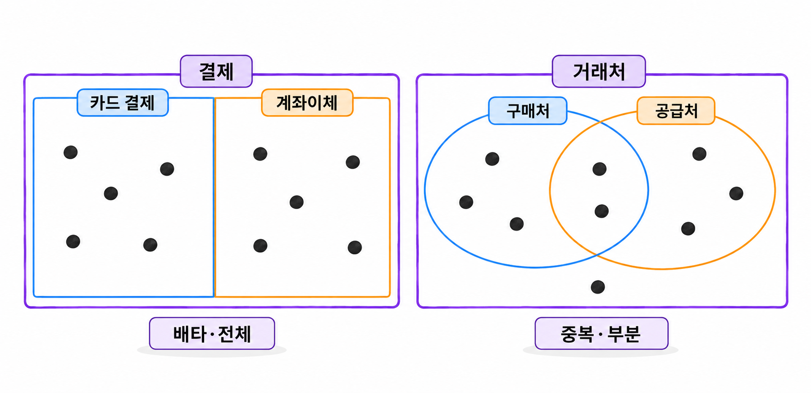

24장. 상속 관계 설계란?
1. 슈퍼타입과 서브타입
1.1 공통 속성과 유형별 속성
상속 관계(inheritance relationship)는 공통 속성을 가진 대상을 하나로 묶고, 유형별로 필요한 속성을 나누는 관계입니다. 공통 부분을 슈퍼타입(supertype), 유형별 부분을 서브타입(subtype)이라고 합니다.
결제 한 건을 관리한다고 생각해 봅시다. 카드 결제와 계좌이체에는 모두 결제번호, 결제금액, 결제일시가 필요합니다. 카드 결제에는 승인번호가 추가로 필요합니다. 계좌이체에는 은행코드와 이체참조번호가 필요합니다.
| 구분 | 관리하는 속성 |
|---|---|
| 결제 슈퍼타입 | 결제번호, 결제금액, 결제일시 |
| 카드 결제 서브타입 | 승인번호 |
| 계좌이체 서브타입 | 은행코드, 이체참조번호 |
카드 결제는 결제에 딸린 별도 부품이 아닙니다. 결제 한 건을 카드 결제라는 구체적인 유형으로 설명한 것입니다. 따라서 슈퍼타입과 서브타입을 별도 테이블에 저장하더라도 같은 결제번호를 사용합니다.
상속 관계를 찾을 때는 “A는 B의 한 종류인가?”를 확인합니다. 카드 결제는 결제의 한 종류입니다. 반면 결제에 딸린 영수증은 결제의 한 종류가 아닙니다. 영수증은 결제와 관계를 맺는 별도 대상입니다.
프로그래밍 언어에서 클래스 상속을 사용했다고 데이터베이스도 같은 구조로 나눌 필요는 없습니다. 데이터베이스에서는 무결성, 조회 방식, 변경 비용을 기준으로 저장 구조를 선택합니다.
1.2 배타·중복 관계와 전체·부분 참여
서브타입을 설계할 때는 두 가지 질문에 답해야 합니다. 한 대상이 여러 서브타입에 동시에 속할 수 있는지, 모든 대상이 반드시 서브타입에 속해야 하는지입니다.
배타 관계(disjoint subtypes)에서는 한 대상이 서브타입 중 최대 하나에만 속합니다. 결제 한 건의 수단을 카드 또는 계좌이체 중 하나로 정한다면 배타 관계입니다.
중복 관계(overlapping subtypes)에서는 한 대상이 여러 서브타입에 동시에 속할 수 있습니다. 거래처가 구매처이면서 공급처일 수 있다면 중복 관계입니다. 이때 같은 거래처에 구매처용 속성과 공급처용 속성을 함께 등록할 수 있습니다.
전체 참여(total specialization)는 모든 슈퍼타입 대상이 적어도 하나의 서브타입에 속해야 한다는 조건입니다. 부분 참여(partial specialization)는 어느 서브타입에도 속하지 않는 대상을 허용합니다.
| 조합 | 허용하는 서브타입 수 | 사례 |
|---|---|---|
| 배타·전체 | 정확히 하나 | 모든 결제가 카드 또는 계좌이체 |
| 배타·부분 | 없거나 하나 | 결제 수단을 정하기 전의 임시 결제 허용 |
| 중복·전체 | 하나 이상 | 모든 거래처가 구매처 또는 공급처이며 겸업 가능 |
| 중복·부분 | 없거나 여러 개 | 역할을 정하지 않은 거래처도 등록 가능 |
여기서 개수는 이번 모델에서 정의한 서브타입을 기준으로 셉니다. 앞으로 서브타입을 추가할 가능성이 있다는 이유만으로 전체 참여를 부분 참여로 표시하지는 않습니다.
복합 결제도 한 행이 무엇을 나타내는지부터 확인해야 합니다. 주문금액을 카드와 계좌이체로 나누어 낸다면, 주문 한 건에 결제 두 건을 연결할 수 있습니다. 결제 한 건의 수단은 하나로 정하면서 주문에 여러 결제를 허용하는 설계입니다.

2. 관계형 테이블로 구현하기
2.1 단일 테이블과 유형 구분 컬럼
슈퍼타입과 모든 서브타입의 속성을 한 테이블에 저장할 수 있습니다. 각 행의 유형은 유형 구분 컬럼(discriminator column)으로 표시합니다.
결제 테이블에 공통 속성과 카드·계좌이체 속성을 모두 둡니다. 카드 결제 행에서는 계좌이체 속성을 비우고, 계좌이체 행에서는 카드 속성을 비웁니다.
아래 예제는 카드와 계좌이체 중 정확히 하나를 선택하는 배타·전체 관계입니다. 승인번호 등은 구조를 설명하기 위한 가상 값입니다. SQL Developer에서 스크립트로 실행합니다. 실습 계정에는 같은 이름의 테이블이 없어야 합니다.
예제 24-1 — 결제 유형별 필수값을 한 테이블에서 검증하기
파일명: ex24_01_single_payment.sql
CREATE TABLE ch24_payment_single (
payment_id NUMBER(12)
CONSTRAINT ch24_ps_pk PRIMARY KEY,
payment_type VARCHAR2(10 CHAR) NOT NULL,
amount NUMBER(12, 2) NOT NULL,
paid_at TIMESTAMP(6) NOT NULL,
approval_no VARCHAR2(30 CHAR),
bank_code VARCHAR2(10 CHAR),
transfer_ref VARCHAR2(40 CHAR),
CONSTRAINT ch24_ps_amount_ck
CHECK (amount > 0),
CONSTRAINT ch24_ps_type_ck
CHECK (payment_type IN ('CARD', 'TRANSFER')),
CONSTRAINT ch24_ps_detail_ck CHECK (
(
payment_type = 'CARD'
AND approval_no IS NOT NULL
AND bank_code IS NULL
AND transfer_ref IS NULL
)
OR
(
payment_type = 'TRANSFER'
AND approval_no IS NULL
AND bank_code IS NOT NULL
AND transfer_ref IS NOT NULL
)
)
);
INSERT INTO ch24_payment_single (
payment_id, payment_type, amount, paid_at,
approval_no, bank_code, transfer_ref
)
VALUES (
1001, 'CARD', 32000,
TIMESTAMP '2026-10-01 09:00:00',
'AP-1001', NULL, NULL
);
INSERT INTO ch24_payment_single (
payment_id, payment_type, amount, paid_at,
approval_no, bank_code, transfer_ref
)
VALUES (
1002, 'TRANSFER', 48000,
TIMESTAMP '2026-10-01 09:10:00',
NULL, 'B01', 'TR-1002'
);
COMMIT;
SELECT payment_id,
payment_type,
amount,
CASE payment_type
WHEN 'CARD' THEN approval_no
WHEN 'TRANSFER' THEN transfer_ref
END AS detail_ref
FROM ch24_payment_single
ORDER BY payment_id;실행 결과
조회 결과는 다음과 같습니다. 컬럼 너비와 숫자 표시 형식은 SQL Developer 설정에 따라 달라질 수 있습니다.
PAYMENT_ID PAYMENT_TYPE AMOUNT DETAIL_REF
1001 CARD 32000 AP-1001
1002 TRANSFER 48000 TR-1002ch24_ps_detail_ck는 유형별 필수값을 검사하고, 사용하지 않는 컬럼이 비어 있는지도 확인합니다. 카드 승인번호를 채웠더라도 은행코드까지 입력하면 허용하지 않습니다.
유형 구분 컬럼에는 NOT NULL을 지정했습니다. CHECK는 조건이 알 수 없음으로 평가되는 행도 허용합니다. 따라서 허용값 목록만 검사해서는 유형의 누락을 막을 수 없습니다.
단일 테이블은 공통 목록을 조회하기 쉽습니다. 같은 행의 컬럼만으로 유형별 필수값도 검사할 수 있습니다. 다만 유형과 속성이 많아질수록 컬럼과 조건식이 늘어납니다.
중복 관계에서는 유형 구분값 하나만으로 여러 역할을 표현하기 어렵습니다. 역할 조합을 코드로 계속 늘리기보다 역할별 테이블이나 별도 관계를 검토합니다.
2.2 슈퍼타입·서브타입별 테이블
공통 속성은 슈퍼타입 테이블에 저장하고, 유형별 속성은 서브타입 테이블에 저장할 수도 있습니다.
서브타입의 결제번호는 기본키이면서 슈퍼타입을 참조하는 외래키입니다. 카드 결제 행에 별도 카드결제번호를 발급하지 않고, 원래 결제번호를 그대로 사용합니다.
아래 예제는 부모와 상세의 유형까지 일치하도록 복합 외래키를 사용합니다. 예제 24-1과 비교할 대안이며, 서로 다른 테이블 이름을 사용합니다.
예제 24-2 — 결제와 유형별 상세를 같은 키로 연결하기
파일명: ex24_02_split_payment.sql
CREATE TABLE ch24_payment (
payment_id NUMBER(12)
CONSTRAINT ch24_p_pk PRIMARY KEY,
payment_type VARCHAR2(10 CHAR) NOT NULL,
amount NUMBER(12, 2) NOT NULL,
paid_at TIMESTAMP(6) NOT NULL,
CONSTRAINT ch24_p_type_ck
CHECK (payment_type IN ('CARD', 'TRANSFER')),
CONSTRAINT ch24_p_amount_ck
CHECK (amount > 0),
CONSTRAINT ch24_p_id_type_uq
UNIQUE (payment_id, payment_type)
);
CREATE TABLE ch24_card_payment (
payment_id NUMBER(12)
CONSTRAINT ch24_cp_pk PRIMARY KEY,
payment_type VARCHAR2(10 CHAR) DEFAULT 'CARD' NOT NULL,
approval_no VARCHAR2(30 CHAR) NOT NULL,
CONSTRAINT ch24_cp_type_ck
CHECK (payment_type = 'CARD'),
CONSTRAINT ch24_cp_parent_fk
FOREIGN KEY (payment_id, payment_type)
REFERENCES ch24_payment (payment_id, payment_type)
);
CREATE TABLE ch24_transfer_payment (
payment_id NUMBER(12)
CONSTRAINT ch24_tp_pk PRIMARY KEY,
payment_type VARCHAR2(10 CHAR) DEFAULT 'TRANSFER' NOT NULL,
bank_code VARCHAR2(10 CHAR) NOT NULL,
transfer_ref VARCHAR2(40 CHAR) NOT NULL,
CONSTRAINT ch24_tp_type_ck
CHECK (payment_type = 'TRANSFER'),
CONSTRAINT ch24_tp_parent_fk
FOREIGN KEY (payment_id, payment_type)
REFERENCES ch24_payment (payment_id, payment_type)
);
INSERT INTO ch24_payment (
payment_id, payment_type, amount, paid_at
)
VALUES (
2001, 'CARD', 32000,
TIMESTAMP '2026-10-01 09:00:00'
);
INSERT INTO ch24_card_payment (
payment_id, approval_no
)
VALUES (
2001, 'AP-2001'
);
INSERT INTO ch24_payment (
payment_id, payment_type, amount, paid_at
)
VALUES (
2002, 'TRANSFER', 48000,
TIMESTAMP '2026-10-01 09:10:00'
);
INSERT INTO ch24_transfer_payment (
payment_id, bank_code, transfer_ref
)
VALUES (
2002, 'B01', 'TR-2002'
);
COMMIT;
SELECT p.payment_id,
p.payment_type,
p.amount,
c.approval_no,
t.bank_code,
t.transfer_ref
FROM ch24_payment p
LEFT JOIN ch24_card_payment c
ON c.payment_id = p.payment_id
LEFT JOIN ch24_transfer_payment t
ON t.payment_id = p.payment_id
ORDER BY p.payment_id;실행 결과
NULL로 적은 칸은 SQL Developer에서 빈칸으로 보일 수 있습니다.
PAYMENT_ID PAYMENT_TYPE AMOUNT APPROVAL_NO BANK_CODE TRANSFER_REF
2001 CARD 32000 AP-2001 NULL NULL
2002 TRANSFER 48000 NULL B01 TR-2002카드 상세의 payment_id가 기본키이므로 결제 한 건에 카드 상세를 두 행 만들 수 없습니다. 복합 외래키는 부모 결제의 존재와 유형 일치를 함께 검사합니다.
부모의 결제번호가 이미 기본키인데도 (payment_id, payment_type)에 UNIQUE를 선언했습니다. 복합 외래키가 참조할 컬럼 조합을 유일키로 선언하기 위해서입니다.
이 구조는 부모 결제에 상세가 반드시 존재하는지까지 보장하지는 않습니다. 부모만 입력하고 커밋해도 현재 제약조건을 통과합니다. 전체 참여를 보장하는 방법은 3.1항에서 다룹니다.
2.3 구체 유형별 독립 테이블
슈퍼타입 테이블을 만들지 않고 카드 결제와 계좌이체 테이블만 만들 수도 있습니다. 이때 결제금액과 결제일시 같은 공통 속성을 각 테이블에 반복해서 정의합니다.
| 테이블 | 컬럼 구성 |
|---|---|
| 카드 결제 | 결제번호, 결제금액, 결제일시, 승인번호 |
| 계좌이체 | 결제번호, 결제금액, 결제일시, 은행코드, 이체참조번호 |
여기서 반복되는 것은 공통 컬럼의 정의입니다. 결제 한 건을 카드 테이블에만 저장한다면 같은 결제금액을 여러 행에 중복 저장하는 것은 아닙니다.
유형별 처리가 독립적이라면 구조가 명확합니다. 카드 결제만 조회할 때 조인이 없고, 카드 승인번호에 NOT NULL을 바로 지정할 수 있습니다.
반면 전체 결제 목록을 보려면 두 테이블의 공통 컬럼을 UNION ALL로 합쳐야 합니다. 새 유형이 생기면 통합 조회에도 새 테이블을 추가해야 합니다.
식별자의 범위도 정해야 합니다. 각 테이블의 기본키만으로는 카드 결제번호 3001과 계좌이체 결제번호 3001이 동시에 생기는 것을 막지 못합니다. 전체 결제에서 유일한 번호가 필요하다면 공통 발급 방식과 입력 경로를 관리해야 합니다. 하나의 시퀀스를 사용하더라도 임의로 입력한 번호의 테이블 간 중복까지 제약조건으로 막아 주지는 않습니다.
부분 참여를 허용하는 업무에도 주의해야 합니다. 구체 유형 테이블만 있으면 어느 유형에도 속하지 않은 슈퍼타입 대상을 저장할 자리가 없습니다. 그런 대상이 필요하다면 저장 구조를 다시 검토해야 합니다.
3. 무결성과 변경 비용 비교
3.1 키 공유·유형 일치·필수 서브타입 검증
슈퍼타입과 서브타입을 나눴다면 다음 조건을 구별해서 검증합니다.
| 검증할 조건 | 예제 24-2의 구현 | 보장 여부 |
|---|---|---|
| 상세가 존재하는 부모를 참조하는가 | 복합 외래키 | 보장 |
| 같은 유형의 상세가 중복되는가 | 상세의 기본키 | 중복 방지 |
| 부모 유형과 상세 유형이 같은가 | 상세의 유형 CHECK와 복합 외래키 | 보장 |
| 카드와 계좌이체 상세가 동시에 생기는가 | 부모의 단일 유형과 유형별 복합 외래키 | 동시 생성 방지 |
| 모든 부모에 상세가 있는가 | 해당 제약조건 없음 | 별도 구현 필요 |
결제번호만 참조하는 외래키는 유형을 확인하지 않습니다. 부모 유형이 TRANSFER여도 카드 상세가 연결될 수 있습니다. 예제 24-2는 부모의 유형과 상세에 지정한 고정 유형을 함께 비교해 이 문제를 막습니다.
다만 이 방법은 배타 관계에 맞춘 구현입니다. 구매처이면서 공급처인 거래처처럼 중복 관계라면 부모의 단일 유형값으로 소속을 제한하면 안 됩니다. 역할별 상세 행의 존재로 여러 소속을 나타내는 방법을 고려합니다.
전체 참여는 반대 방향의 조건입니다. 자식에서 부모를 참조하는 외래키는 “상세가 있으면 부모가 있어야 한다”를 보장합니다. “부모가 있으면 상세가 있어야 한다”는 보장하지 않습니다.
분리 구조를 유지하면서 전체 참여를 보장하려면 등록·삭제 경로를 함께 설계해야 합니다. 예를 들어 저장 프로시저에서 부모와 해당 상세를 같은 트랜잭션으로 입력하게 만듭니다. 중간에 실패하면 두 입력을 함께 취소합니다. 애플리케이션 계정에는 테이블 직접 DML 권한 대신 해당 프로시저의 실행 권한을 부여할 수 있습니다.
등록뿐 아니라 상세 삭제와 유형 변경도 같은 통제 범위에 넣어야 합니다. 상세를 직접 삭제할 수 있다면 등록 시점의 검증만으로 전체 참여를 유지할 수 없습니다.
Oracle 21c의 CHECK에는 다른 테이블을 조회하는 서브쿼리를 넣을 수 없습니다. 따라서 부모 테이블의 CHECK로 상세 존재 여부를 검사할 수 없습니다. 단순한 행 트리거로 대신하려 해도 부모를 먼저 입력하는 중간 상태와 동시 실행을 고려해야 합니다.
다음 코드는 예제 24-2에서 유형에 맞는 상세가 없는 결제를 찾습니다. 운영 중 정합성을 확인하는 데 쓸 수 있지만, 잘못된 입력 자체를 막는 제약조건은 아닙니다.
코드 조각
SELECT p.payment_id, p.payment_type
FROM ch24_payment p
WHERE (
p.payment_type = 'CARD'
AND NOT EXISTS (
SELECT 1
FROM ch24_card_payment c
WHERE c.payment_id = p.payment_id
)
)
OR (
p.payment_type = 'TRANSFER'
AND NOT EXISTS (
SELECT 1
FROM ch24_transfer_payment t
WHERE t.payment_id = p.payment_id
)
);전체 참여가 핵심 규칙이고 유형별 속성이 많지 않다면 단일 테이블이 더 적합할 수 있습니다. 예제 24-1처럼 한 행의 조건식으로 필수값까지 검사할 수 있기 때문입니다.
3.2 조인·NULL·중복·새 유형 추가 비용
세 구현 방식은 같은 논리 모델을 서로 다르게 저장합니다. 테이블 수만으로 우열을 정하지 않고 대표 조회와 변경 작업을 비교합니다.
| 비교 항목 | 단일 테이블 | 슈퍼타입·서브타입별 테이블 | 구체 유형별 독립 테이블 |
|---|---|---|---|
| 공통 목록 조회 | 한 테이블 조회 | 슈퍼타입만 조회 | 여러 테이블을 합침 |
| 특정 유형의 전체 정보 | 한 테이블 조회 | 부모와 해당 상세 조인 | 해당 유형 테이블 조회 |
| 유형별 필수값 | 조건부 CHECK | 상세 컬럼의 NOT NULL | 컬럼의 NOT NULL |
| 해당하지 않는 속성 | NULL로 저장 | 해당 상세 행이 없음 | 해당 컬럼이 없음 |
| 공통 속성 정의 | 한 곳 | 한 곳 | 각 유형 테이블에 반복 |
| 새 유형 추가 | 컬럼·조건식 검토 | 상세 테이블·유형 조건 검토 | 테이블·통합 조회 검토 |
| 공통 대상 참조 | 하나의 외래키 | 슈퍼타입 외래키 | 별도 참조 설계 필요 |
단일 테이블에서 NULL이 많다는 사실만으로 설계가 잘못된 것은 아닙니다. 해당하지 않는 속성이 무엇인지 분명하고, 유형별 필수값을 검증할 수 있다면 합리적인 선택입니다.
분리 구조에서는 상세 컬럼에 필수 조건을 명확히 둘 수 있습니다. 상세 정보에 대한 접근 권한을 나누기도 좋습니다. 하지만 부모와 상세를 함께 변경하는 작업이 늘고, 전체 참여를 별도로 보장해야 합니다.
독립 테이블에서는 공통 속성을 변경할 때 여러 테이블을 고쳐야 합니다. 결제금액의 허용 범위나 정밀도가 바뀌면 모든 유형에 같은 변경을 적용해야 합니다. 한 테이블만 빠뜨려도 유형별 규칙이 달라집니다.
조회 성능은 실제로 읽는 데이터를 기준으로 판단합니다. 공통 결제 목록을 주로 조회한다면 슈퍼타입만 읽는 구조가 유리할 수 있습니다. 항상 상세까지 필요하다면 조인 비용도 측정해야 합니다. 단일 테이블도 행이 넓어지면 같은 건수를 읽는 데 더 많은 블록이 필요할 수 있습니다.
서로 다른 세 설계에 같은 운영 데이터를 동시에 저장할 필요는 없습니다. 비교를 거쳐 하나를 기본 저장 구조로 선택합니다.
3.3 여러 대상 유형을 참조하는 관계의 설계
결제에 환불을 연결한다고 생각해 봅시다. 환불은 카드 결제와 계좌이체를 모두 대상으로 할 수 있습니다.
슈퍼타입 테이블이 있다면 환불의 payment_id가 결제 테이블을 참조하면 됩니다. 공통 대상의 존재는 하나의 외래키로 확인합니다. 카드 승인정보가 필요한 작업에서만 카드 상세를 추가로 조회합니다.
문제는 유형별 독립 테이블을 선택했을 때입니다. 환불 테이블에 target_type과 target_id를 두고, 유형값에 따라 서로 다른 테이블을 찾도록 만들기 쉽습니다.
| refund_id | target_type | target_id |
|---|---|---|
| 9001 | CARD | 3001 |
| 9002 | TRANSFER | 3002 |
이런 방식을 다형적 참조(polymorphic association)라고 합니다. 하나의 참조 컬럼이 여러 종류의 테이블을 가리키는 구조입니다.
일반적인 외래키 하나는 참조할 테이블을 하나로 지정합니다. target_type이 CARD이면 카드 테이블을, TRANSFER이면 계좌이체 테이블을 검사하도록 선언할 수 없습니다. 따라서 위 구조의 target_id에 값이 있어도 대상 행의 존재가 자동으로 보장되지는 않습니다.
대상 종류가 적고 안정적이라면 대상별 외래키를 따로 두는 방법이 있습니다. 다음은 카드 결제와 계좌이체 테이블이 각각 존재한다고 가정한 컬럼 구성입니다.
| 컬럼 | 역할 |
|---|---|
refund_id | 환불 기본키 |
card_payment_id | 카드 결제를 참조하는 외래키 |
transfer_payment_id | 계좌이체를 참조하는 외래키 |
두 외래키 중 정확히 하나만 채우도록 같은 행에서 검사합니다.
코드 조각
CHECK (
(
card_payment_id IS NOT NULL
AND transfer_payment_id IS NULL
)
OR
(
card_payment_id IS NULL
AND transfer_payment_id IS NOT NULL
)
)이 조건에 대상별 외래키를 함께 선언하면 대상의 존재와 하나만 선택하는 규칙을 검사할 수 있습니다. 다만 새 결제 유형을 추가할 때마다 참조 컬럼과 조건식도 바꿔야 합니다.
공통 대상을 참조하는 관계가 많다면 슈퍼타입 테이블을 둘 근거가 됩니다. 또 다른 방법은 공통 환불 테이블과 유형별 환불 연결 테이블을 나누는 것입니다. 이때도 환불마다 연결이 정확히 하나인지 별도로 검증해야 합니다.
공통 상위 테이블은 업무상 같은 종류인 대상을 묶을 때 사용합니다. 여러 테이블에서 참조한다는 이유만으로 관련 없는 대상을 하나로 합치면 속성과 규칙의 의미가 흐려집니다.
4. 연습문제 — 결제 수단별 데이터 모델 비교
요구사항
- 주문 한 건에는 여러 결제가 연결될 수 있습니다. 각 결제는 정확히 한 주문에 속합니다.
- 결제 한 건의 유형은 카드, 계좌이체, 간편결제 중 정확히 하나입니다.
- 모든 결제에는 결제번호, 주문번호, 결제금액, 결제일시가 필요합니다. 결제금액은 0보다 커야 합니다.
- 카드 결제에는 승인번호가 필요합니다.
- 계좌이체에는 은행코드와 이체참조번호가 필요합니다.
- 간편결제에는 서비스코드와 외부거래번호가 필요합니다.
- 환불은 결제 한 건을 참조합니다. 한 결제에 여러 번의 부분 환불이 생길 수 있습니다.
- 전체 결제 목록과 특정 유형의 상세 내역을 모두 조회해야 합니다.
작성할 내용
- 한 행의 의미와 슈퍼타입·서브타입의 속성을 정리합니다.
- 배타·중복 관계와 전체·부분 참여를 판정하고 근거를 적습니다.
- 단일 테이블, 슈퍼타입·서브타입별 테이블, 구체 유형별 독립 테이블을 draw.io로 각각 그립니다.
- 각 대안에서 기본키, 외래키, 유형별 필수값, 환불의 참조 방식을 표시합니다.
- 한 대안을 선택해 Oracle 21c용 DDL과 정상 입력 SQL을 작성합니다.
- 선택한 구조에서 간편결제를 나중에 추가한다고 가정하고 변경할 객체와 SQL을 적습니다.
검증할 입력
| 입력 상황 | 기대하는 처리 |
|---|---|
| 필요한 속성을 모두 갖춘 카드 결제 | 허용 |
| 승인번호가 없는 카드 결제 | 거부 |
| 결제 유형이 없는 행 | 거부 |
| 존재하지 않는 결제를 참조하는 환불 | 거부 |
| 같은 결제에 카드와 계좌이체 상세를 동시에 등록 | 거부 |
| 분리 구조에서 부모 결제만 등록한 뒤 확정 | 전체 참여 규칙에 따라 거부 |
마지막 항목은 외래키만으로 해결되지 않습니다. 선택한 구현에서 누가 어느 시점에 검사하는지 적습니다. 직접 DML을 허용하는지도 함께 명시합니다.
완료 조건
- 같은 결제를 슈퍼타입과 서브타입에서 동일한 식별자로 관리합니다.
- 제약조건이 보장하는 규칙과 별도 처리로 보장하는 규칙을 구별합니다.
- 전체 목록 조회와 유형별 상세 조회를 각각 작성합니다.
- 환불 대상의 존재를 어떻게 보장하는지 설명합니다.
- 조인 수, 유형별
NULL, 공통 속성 정의의 반복, 새 유형 추가 비용을 근거로 최종안을 선택합니다.